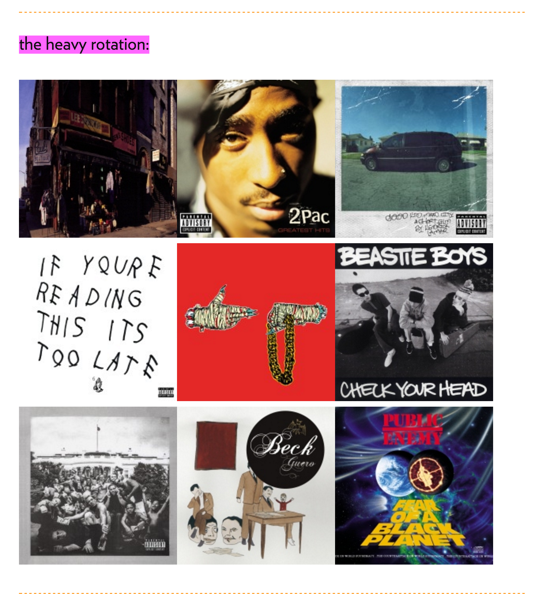

Library and Lambda function to show your Rdio Heavy Rotation on your website
I thought it’d be cool to show what albums I’m listening to lately on my site, so I wrote a client lib and and Amazon Lambbda function to get the albums from your Rdio Heavy Rotation and put them on your site.
You can check it out on my site under “the heavy rotation”.

The Lambda function authenticates with Rdio and fetches the data for the client, and the client adds the imgs to the web page.
Here’s the client code on GitHub, and here’s the Lambda code on GitHub.
Follow me on Twitter to keep up with what I’ve learned building my personal finance tool, Stash.